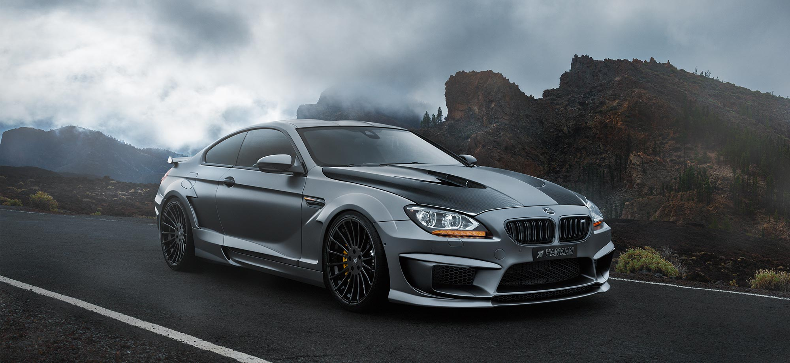
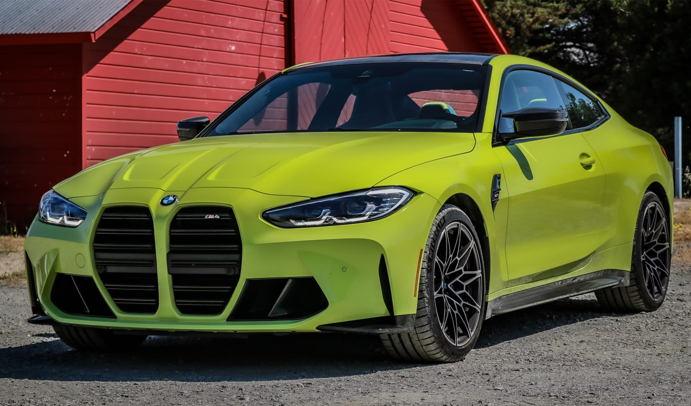
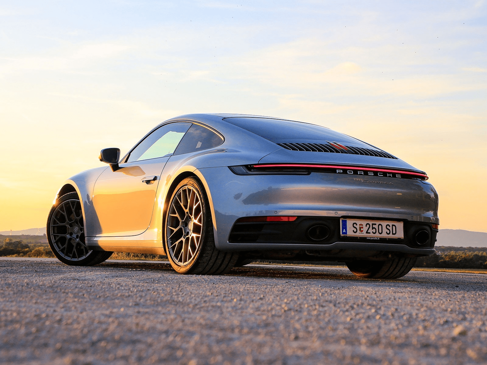
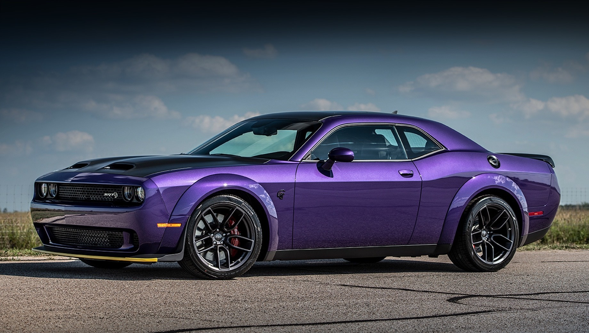
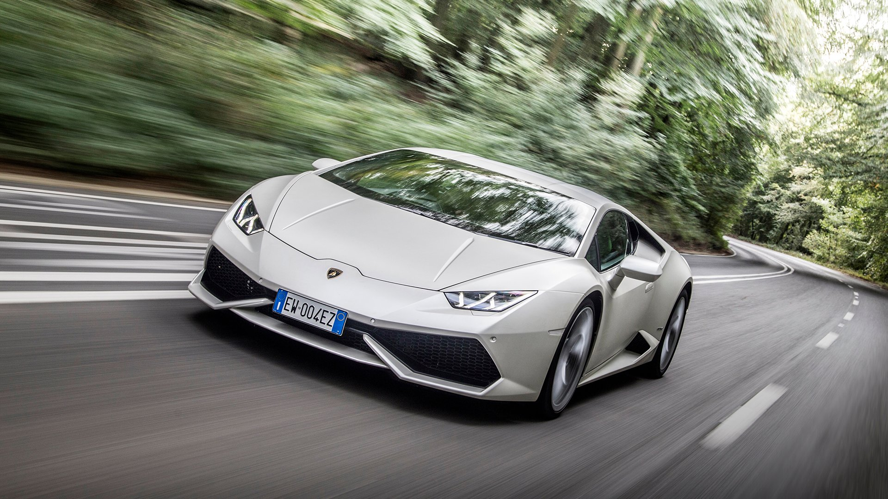

Кузов КУПЕ

Купе (Coupe) – это тип кузова легкового автомобиля с двумя дверями и спортивным силуэтом. Купе ориентированы на динамику, стиль и драйверские ощущения, часто имея более низкую посадку и жёсткую подвеску. В отличие от седанов, купе обычно вмещают двух или четырёх пассажиров, а их багажник может быть меньше по объёму.
Основные характеристики:
- Количество дверей: 2 боковые + крышка багажника (иногда это лифтбек, как у Audi A5 Coupe).
- Посадочные места: Обычно 2+2 (две передние и небольшие задние сиденья).
- Привод: Чаще задний или полный, реже передний.
- Подвеска: Спортивная, жёсткая для лучшей управляемости.
- Дизайн: Заниженный, вытянутый, с покатой крышей.
Классификация:

BMW M4

Porsche Carrera 4s
- Компактные купе – более доступные модели с хорошей динамикой (Toyota GT86, Subaru BRZ, Honda Civic Coupe).
- Среднеразмерные купе – баланс мощности и комфорта (BMW 4-Series Coupe, Audi A5 Coupe, Mercedes C-Class Coupe).
- Премиальные спорт-купе – мощные и дорогие версии (BMW M4, Audi RS5 Coupe, Mercedes-AMG C63 Coupe).
- Гранд-туреры (GT) – роскошные и быстрые (Bentley Continental GT, Lexus LC500, Porshe 911-ые).
- Маслкары (Muscle Car) – это мощные автомобили с агрессивным дизайном, большими атмосферными или турбированными V8, заточены под мощность и разгон, оставаясь верными американскому стилю (Chevrolet Camaro, Dodge Challenger, Ford Mustang).
- Суперкары в кузове купе – экстремальные по характеристикам (Ferrari 296 GTB, Lamborghini Huracán).

Dodge Challenger

Lamborghini Huracan
Преимущества:
- Спортивный дизайн – стильный и агрессивный внешний вид.
- Лучшая аэродинамика – ниже вес и центр тяжести, что улучшает управляемость.
- Жёсткий кузов – меньше скручиваний при движении на высокой скорости.
- Престиж – купе часто ассоциируются с люксом и спорткарами.
Недостатки:
- Меньше удобства – ограниченный доступ к задним сиденьям.
- Компактный багажник – хуже подходит для перевозки крупного груза.
- Меньше места для пассажиров – задние сиденья часто тесные.
- Жёсткая подвеска – может быть менее комфортной в городе.
Купе – это выбор для тех, кто ценит стиль, драйв и удовольствие от вождения.